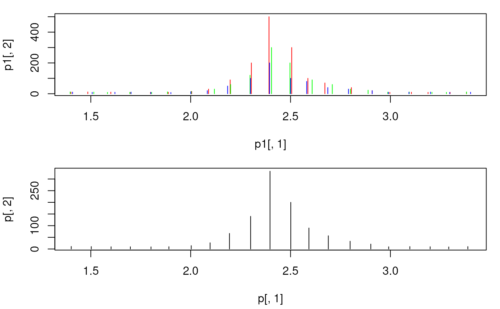

combinePeaksData aggregates provided peak matrices into a single peak
matrix. Peaks are grouped by their m/z values with the group() function
from the MsCoreUtils package. In brief, all peaks in all provided
spectra are first ordered by their m/z and consecutively grouped into one
group if the (pairwise) difference between them is smaller than specified
with parameter tolerance and ppm (see group() for grouping details
and examples).
The m/z and intensity values for the resulting peak matrix are calculated
using the mzFun and intensityFun on the grouped m/z and intensity values.
Note that only the grouped m/z and intensity values are used in the
aggregation functions (mzFun and intensityFun) but not the number of
spectra.
The function supports also different strategies for peak combinations which
can be specified with the peaks parameter:
peaks = "union"(default): report all peaks from all input spectra.peaks = "intersect": keep only peaks in the resulting peak matrix that are present in>= minPropproportion of input spectra. This would generate a consensus or representative spectra from a set of e.g. fragment spectra measured from the same precursor ion.
As a special case it is possible to report only peaks in the resulting
matrix from peak groups that contain a peak from one of the input spectra,
which can be specified with parameter main. Thus, if e.g. main = 2 is
specified, only (grouped) peaks that have a peak in the second input matrix
are returned.
Setting timeDomain to TRUE causes grouping to be performed on the square
root of the m/z values (assuming a TOF instrument was used to create the
data).
Arguments
- x
listof peak matrices.- intensityFun
functionto be used to combine intensity values for matching peaks. By default the mean intensity value is returned.- mzFun
functionto be used to combine m/z values for matching peaks. By default the mean m/z value is returned.- weighted
logical(1)defining whether m/z values for matching peaks should be calculated by an intensity-weighted average of the individuak m/z values. This overrides parametermzFun.- tolerance
numeric(1)defining the (absolute) maximal accepted difference between mass peaks to group them into the same final peak.- ppm
numeric(1)defining the m/z-relative maximal accepted difference between mass peaks (expressed in parts-per-million) to group them into the same final peak.- timeDomain
logical(1)whether grouping of mass peaks is performed on the m/z values (timeDomain = FALSE) or onsqrt(mz)(timeDomain = TRUE).- peaks
character(1)specifying how peaks should be combined. Can be either"peaks = "union"(default) orpeaks = "intersect". See function description for details.- main
optional
integer(1)to force the resulting peak list to contain only peaks that are present in the specified input spectrum. See description for details.- minProp
numeric(1)for `peaks = "intersect": the minimal required proportion of input spectra (peak matrices) a mass peak has to be present to be included in the consensus peak matrix.- ...
additional parameters to the
mzFunandintensityFunfunctions.
Value
Peaks matrix with m/z and intensity values representing the aggregated
values across the provided peak matrices.
Details
For general merging of spectra, the tolerance and/or ppm should be
manually specified based on the precision of the MS instrument. Peaks
from spectra with a difference in their m/z being smaller than tolerance
or smaller than ppm of their m/z are grouped into the same final peak.
Some details for the combination of consecutive spectra of an LC-MS run:
The m/z values of the same ion in consecutive scans (spectra) of a LC-MS run
will not be identical. Assuming that this random variation is much smaller
than the resolution of the MS instrument (i.e. the difference between
m/z values within each single spectrum), m/z value groups are defined
across the spectra and those containing m/z values of the main spectrum
are retained.
Intensities and m/z values falling within each of these m/z groups are
aggregated using the intensityFun and mzFun, respectively. It is
highly likely that all QTOF profile data is collected with a timing circuit
that collects data points with regular intervals of time that are then later
converted into m/z values based on the relationship t = k * sqrt(m/z). The
m/z scale is thus non-linear and the m/z scattering (which is in fact caused
by small variations in the time circuit) will thus be different in the lower
and upper m/z scale. m/z-intensity pairs from consecutive scans to be
combined are therefore defined by default on the square root of the m/z
values. With timeDomain = FALSE, the actual m/z values will be used.
Examples
set.seed(123)
mzs <- seq(1, 20, 0.1)
ints1 <- abs(rnorm(length(mzs), 10))
ints1[11:20] <- c(15, 30, 90, 200, 500, 300, 100, 70, 40, 20) # add peak
ints2 <- abs(rnorm(length(mzs), 10))
ints2[11:20] <- c(15, 30, 60, 120, 300, 200, 90, 60, 30, 23)
ints3 <- abs(rnorm(length(mzs), 10))
ints3[11:20] <- c(13, 20, 50, 100, 200, 100, 80, 40, 30, 20)
## Create the peaks matrices
p1 <- cbind(mz = mzs + rnorm(length(mzs), sd = 0.01),
intensity = ints1)
p2 <- cbind(mz = mzs + rnorm(length(mzs), sd = 0.01),
intensity = ints2)
p3 <- cbind(mz = mzs + rnorm(length(mzs), sd = 0.009),
intensity = ints3)
## Combine the spectra. With `tolerance = 0` and `ppm = 0` only peaks with
## **identical** m/z are combined. The result will be a single spectrum
## containing the *union* of mass peaks from the individual input spectra.
p <- combinePeaksData(list(p1, p2, p3))
## Plot the spectra before and after combining
par(mfrow = c(2, 1), mar = c(4.3, 4, 1, 1))
plot(p1[, 1], p1[, 2], xlim = range(mzs[5:25]), type = "h", col = "red")
points(p2[, 1], p2[, 2], type = "h", col = "green")
points(p3[, 1], p3[, 2], type = "h", col = "blue")
plot(p[, 1], p[, 2], xlim = range(mzs[5:25]), type = "h",
col = "black")
## The peaks were not merged, because their m/z differs too much.
## Combine spectra with `tolerance = 0.05`. This will merge all triplets.
p <- combinePeaksData(list(p1, p2, p3), tolerance = 0.05)
## Plot the spectra before and after combining
par(mfrow = c(2, 1), mar = c(4.3, 4, 1, 1))
plot(p1[, 1], p1[, 2], xlim = range(mzs[5:25]), type = "h", col = "red")
points(p2[, 1], p2[, 2], type = "h", col = "green")
points(p3[, 1], p3[, 2], type = "h", col = "blue")
plot(p[, 1], p[, 2], xlim = range(mzs[5:25]), type = "h",
col = "black")

## With `intensityFun = max` the maximal intensity per peak is reported.
p <- combinePeaksData(list(p1, p2, p3), tolerance = 0.05,
intensityFun = max)
## Create *consensus*/representative spectrum from a set of spectra
p1 <- cbind(mz = c(12, 45, 64, 70), intensity = c(10, 20, 30, 40))
p2 <- cbind(mz = c(17, 45.1, 63.9, 70.2), intensity = c(11, 21, 31, 41))
p3 <- cbind(mz = c(12.1, 44.9, 63), intensity = c(12, 22, 32))
## No mass peaks identical thus consensus peaks are empty
combinePeaksData(list(p1, p2, p3), peaks = "intersect")
#> mz intensity
## Reducing the minProp to 0.2. The consensus spectrum will contain all
## peaks
combinePeaksData(list(p1, p2, p3), peaks = "intersect", minProp = 0.2)
#> mz intensity
#> [1,] 12.0 10
#> [2,] 12.1 12
#> [3,] 17.0 11
#> [4,] 44.9 22
#> [5,] 45.0 20
#> [6,] 45.1 21
#> [7,] 63.0 32
#> [8,] 63.9 31
#> [9,] 64.0 30
#> [10,] 70.0 40
#> [11,] 70.2 41
## With a tolerance of 0.1 mass peaks can be matched across spectra
combinePeaksData(list(p1, p2, p3), peaks = "intersect", tolerance = 0.1)
#> mz intensity
#> [1,] 12.05 11.0
#> [2,] 45.00 21.0
#> [3,] 63.95 30.5
## Report the minimal m/z and intensity
combinePeaksData(list(p1, p2, p3), peaks = "intersect", tolerance = 0.1,
intensityFun = min, mzFun = min)
#> mz intensity
#> [1,] 12.0 10
#> [2,] 44.9 20
#> [3,] 63.9 30